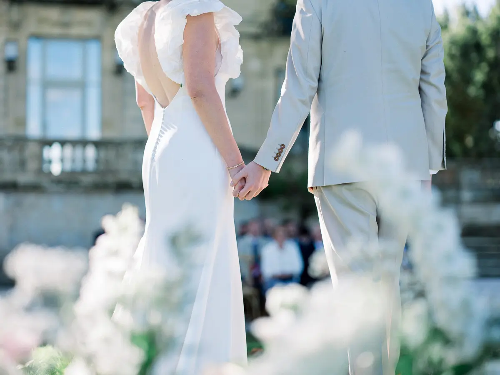
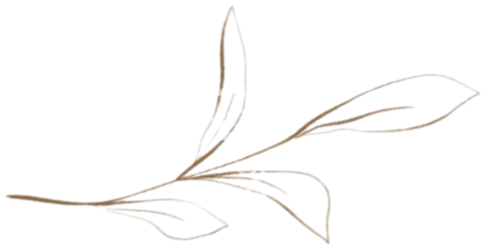
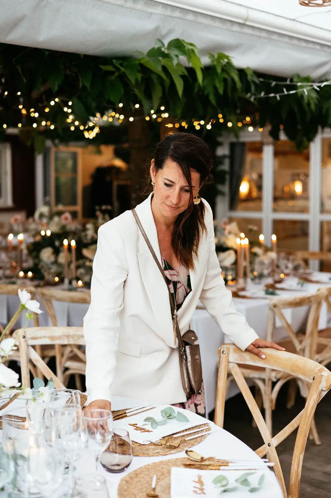
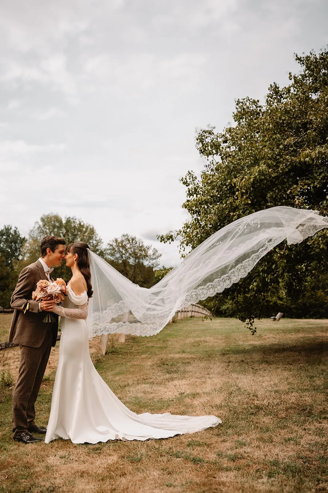
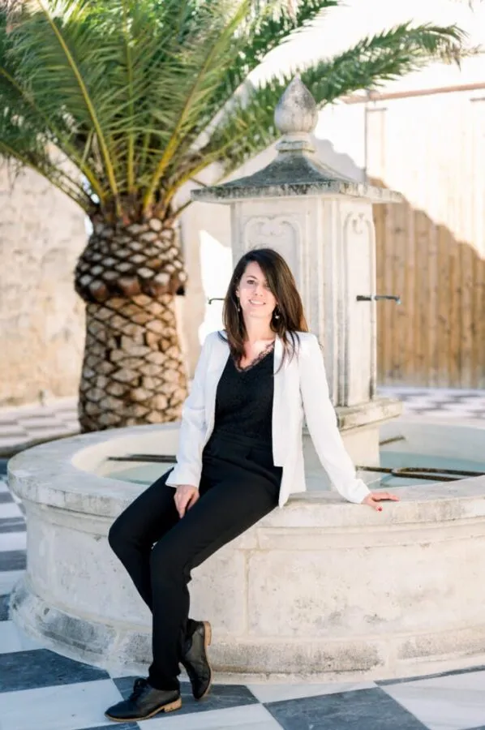
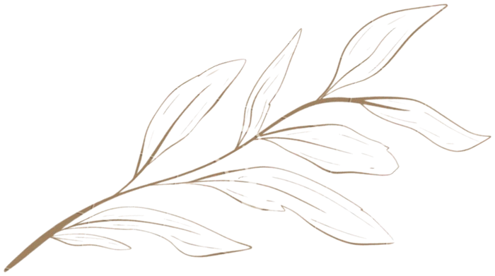
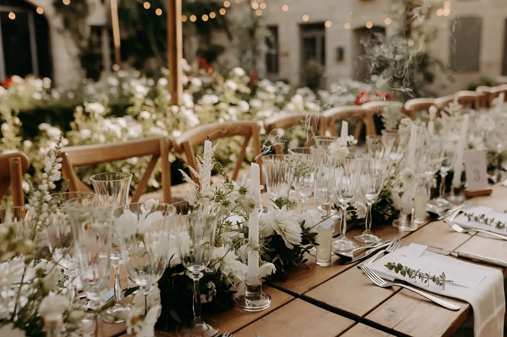

Full wedding planning
I take care of every stage of your preparations and guide you through each decision, always bringing ideas so that your wedding is unmistakably yours.
Discover
Bespoke wedding planning and design, for elegant, seamless and deeply personal celebrations.
Tell me about your weddingA wedding planner in Bordeaux since 2014, I work with French and international couples to plan elegant, flawlessly orchestrated weddings, in Gironde and throughout France.
Each project is conceived as a unique experience, where every detail is carefully imagined to reflect who you are. From choosing the venue to coordinating the day itself, I guide you with high standards, an eye for detail and a sense of calm.

ServicesEvery wedding is a unique project, combining aesthetic ambition with seamless organisation.
I take care of every stage of your preparations and guide you through each decision, always bringing ideas so that your wedding is unmistakably yours.
Discover
Creative and passionate, I am a certified Wedding Designer and create a complete scenography that matches the theme of your wedding.
Discover
I conduct the orchestra on the day: managing your suppliers, installing your decor and keeping the whole day flowing.
DiscoverUnique celebrations imagined in Gironde, Dordogne, the Basque Country and beyond.

Marie and Charles celebrated their wedding at Château Pontac Lynch surrounded by 80 guests, in a retro English boudoir atmosphere: chic and full of character.
Read their story
A Franco-German couple, Yvonne & Thomas crossed France to celebrate their union at Château Belle Époque, in the Landes. Imagined as a timeless interlude, their wedding unfolded over four days.
Read their story
A wedding devoted to family and friends, designed as an intimate, timeless moment. Nature, plays of light, candles and green tones created a warm, enveloping atmosphere.
Read their story
Alexandra & Clément imagined a wedding that was truly theirs: elegant, vintage, in mocha tones, and above all full of surprises. Surrounded by 100 loved ones, every moment had its own flavour.
Read their story
I take the time to understand your wishes, your priorities and your story, and turn that vision into a seamless, elegant and perfectly orchestrated experience.

I founded Lovely Day Event in 2014. I am Alexandra Ambert, a wedding planner in Bordeaux, and accompanying couples still moves me as much as on the very first day.
I imagine and orchestrate bespoke weddings, combining high standards, an eye for detail and a deeply human approach.

Your wedding should be one of a kind. I am by your side from the very beginning to plan the most beautiful day of your life.
A first conversation to understand your story and lay the foundations of your wedding. Every step is then structured with clarity and calm.
A rigorous selection of local, specialist suppliers, chosen for their standards and their ability to elevate your wedding in Gironde, Dordogne or the Basque Country.
An aesthetic direction considered down to the smallest detail, inspired by your venue and the atmosphere you wish to create.
A discreet, attentive presence orchestrating every moment, wherever you celebrate in South-West France or beyond.

Nouvelle-Aquitaine is full of breathtaking landscapes and wonderful regional cuisine. With vineyards as far as the eye can see, the Bordeaux region offers some of the finest wines in the country for your wedding dinner, and its natural, untamed scenery adds something sublime to your photographs.
Whether you dream of a château for a chic celebration, a private beachfront villa, the heart of the Bordeaux vineyards or a grand hotel for a refined affair, the region has the perfect venue for your unforgettable day.
Médoc and Saint-Émilion châteaux, Entre-deux-Mers estates, the Arcachon Bay: I know the Bordeaux venues and suppliers. Couples in Gironde, Dordogne, the Basque Country and other regions of France choose me as their wedding planner.
“Entrusting the coordination of our wedding to Alexandra was the key to our peace of mind. From our first meeting we knew she was the right person. Her excellent relationships with suppliers built a true team around our wedding.”
“We are only just coming down from cloud nine: 18 June was magical! We never expected to enjoy the day so much. Everyone loved the decor, the suppliers, the organisation. Thank you Alexandra for making it our perfect wedding!”

Share your story and your vision. I will take the time to guide you with care and accompany you at every step.
Enquire